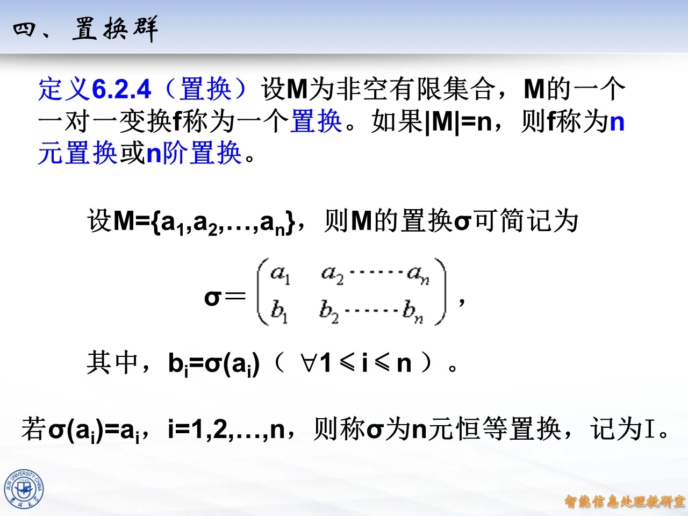
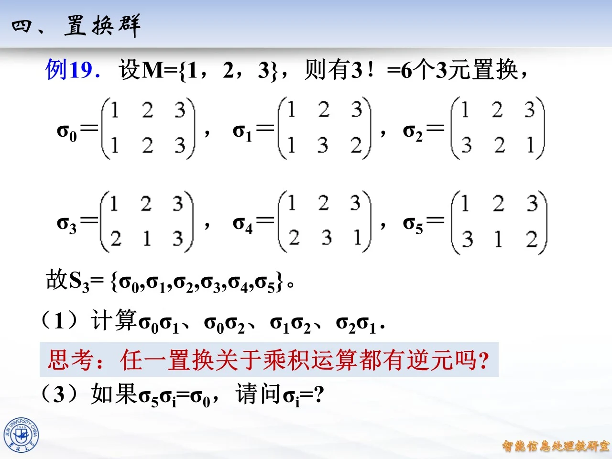
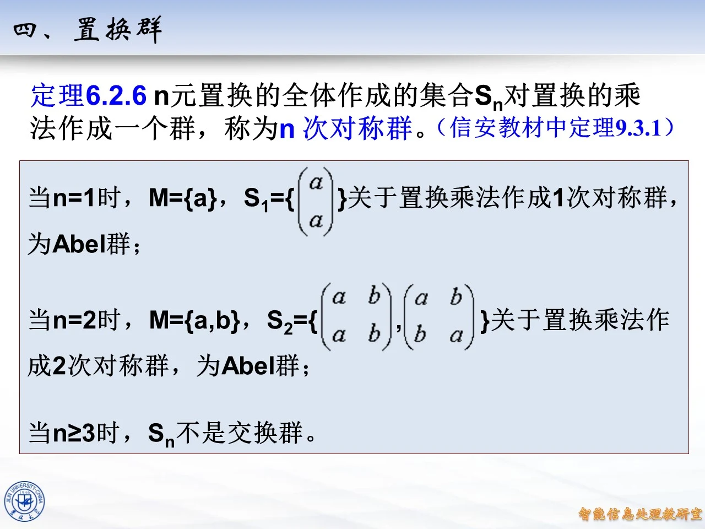

本讲解覆盖第八章 8.1 节目录主题「置换群」，对应课件 §6.2 群的定义中第四部分。置换是把有限集合映到自身的一一对应，是构造具体群的最基本来源；课件先给出置换的定义与双行记号，再定义置换的乘积并验证它满足群的全部条件，最后得到 n 次对称群这一重要实例。学习本讲之前应已掌握映射、双射与群的定义；本讲得到对称群后，后面章节的循环群、子群与 Lagrange 定理都会反复以它为例子。
置换的定义（定义 6.2.4）
◆ p.1-31 ｜重复收录说明
本课的幻灯片存在两份重复收录：第一份共 31 页（p.311-341），第二份共 31 页（p.1-31），两份逐页内容完全相同（同一课件「§6.2 群的定义 · 四、置换群」的两次录制）。对应关系为：p.1 对应 p.311，p.2-4 对应 p.312-314，p.5-6 对应 p.315-316，p.7 对应 p.317，p.8-11 对应 p.318-321，p.12-13 对应 p.322-323，p.14 对应 p.324，p.15-18 对应 p.325-328，p.19 对应 p.329，p.20-22 对应 p.330-332，p.23 对应 p.333，p.24 对应 p.334，p.25-26 对应 p.335-336，p.27-28 对应 p.337-338，p.29 对应 p.339，p.30 对应 p.340，p.31 对应 p.341。以下讲解以第一份页码为准，内容同时覆盖两份。
◆ p.311 ｜§6.2 群的定义（过渡页）
本页为章节过渡页，只含章节标题「§6.2 群的定义」与装饰图片，正文从下一页的定义 6.2.4 开始。它交代了本讲在课件中的位置：置换群是「群的定义」一节中继抽象定义之后给出的第一个系统性例子。
◆ p.312-314 ｜定义 6.2.4（置换）
定义 6.2.4：设 M M M M M M f f f 置换 。如果 ∣ M ∣ = n |M|=n ∣ M ∣ = n f f f n n n n n n M = { a 1 , a 2 , … , a n } M=\{a_1,a_2,\ldots,a_n\} M = { a 1 , a 2 , … , a n } M M M σ \sigma σ
σ = ( a 1 a 2 ⋯ a n b 1 b 2 ⋯ b n ) , \sigma=\begin{pmatrix}a_1 & a_2 & \cdots & a_n\\ b_1 & b_2 & \cdots & b_n\end{pmatrix}, σ = ( a 1 b 1 a 2 b 2 ⋯ ⋯ a n b n ) ,
其中 b i = σ ( a i ) b_i=\sigma(a_i) b i = σ ( a i ) 1 ≤ i ≤ n 1\le i\le n 1 ≤ i ≤ n σ \sigma σ σ ( a i ) = a i \sigma(a_i)=a_i σ ( a i ) = a i i i i σ \sigma σ n n n 恒等置换 ，记为 I I I
◆ p.315-316 ｜双行记号中各列顺序可以任意安排
由于双行记号只是描述映射的一种方式（每一列只记录「上行元素映到下行元素」这一件事），所以各列的顺序可以任意安排：把若干列整体对调，映射本身不变。比如
σ = ( a 1 a 2 ⋯ a n b 1 b 2 ⋯ b n ) \sigma=\begin{pmatrix}a_1 & a_2 & \cdots & a_n\\ b_1 & b_2 & \cdots & b_n\end{pmatrix} σ = ( a 1 b 1 a 2 b 2 ⋯ ⋯ a n b n )
也可以写作
σ = ( a 2 a 1 ⋯ a n b 2 b 1 ⋯ b n ) . \sigma=\begin{pmatrix}a_2 & a_1 & \cdots & a_n\\ b_2 & b_1 & \cdots & b_n\end{pmatrix}. σ = ( a 2 b 2 a 1 b 1 ⋯ ⋯ a n b n ) .
注意必须是整列一起换 ：上行元素与它的像必须配对移动；只动上行的顺序而不动下行，写出的就是另一个映射了。这个自由性在后面验算乘积、写逆置换时都要用到。
◆ p.315-316 与 p.5-6 重复说明：本页块同时对应第二份收录课件 p.5-6 的同一内容。
◆ p.317 ｜填空题：三个元素的集合上有多少个置换
题目：集合 M M M 3 3 3 M M M 3 3 3 2 2 2 1 1 1 3 × 2 × 1 = 3 ! = 6 3\times2\times1=3!=6 3 × 2 × 1 = 3 ! = 6 6 6 6 3 ! = 6 3!=6 3 ! = 6

课件原图 · 10月26日授课 · 第 314 页 查看前后已收录原页 → 置换的个数与 S n S_n S n
◆ p.318-321 ｜结论：M M M n ! n! n ! ∣ M ∣ = n |M|=n ∣ M ∣ = n M M M n ! n! n ! n n n n − 1 n-1 n − 1 k k k n − k + 1 n-k+1 n − k + 1 n ! = n × ( n − 1 ) × ⋯ × 1 n!=n\times(n-1)\times\cdots\times1 n ! = n × ( n − 1 ) × ⋯ × 1 n ! n! n ! S n S_n S n 3 ! = 6 3!=6 3 ! = 6 4 ! = 24 4!=24 4 ! = 24
例 19：S 3 S_3 S 3
◆ p.322-323 ｜例 19：列出 S 3 S_3 S 3 M = { 1 , 2 , 3 } M=\{1,2,3\} M = { 1 , 2 , 3 } 3 ! = 6 3!=6 3 ! = 6
σ 0 = ( 1 2 3 1 2 3 ) , σ 1 = ( 1 2 3 1 3 2 ) , σ 2 = ( 1 2 3 3 2 1 ) , \sigma_0=\begin{pmatrix}1&2&3\\1&2&3\end{pmatrix},\quad \sigma_1=\begin{pmatrix}1&2&3\\1&3&2\end{pmatrix},\quad \sigma_2=\begin{pmatrix}1&2&3\\3&2&1\end{pmatrix}, σ 0 = ( 1 1 2 2 3 3 ) , σ 1 = ( 1 1 2 3 3 2 ) , σ 2 = ( 1 3 2 2 3 1 ) ,
σ 3 = ( 1 2 3 2 1 3 ) , σ 4 = ( 1 2 3 2 3 1 ) , σ 5 = ( 1 2 3 3 1 2 ) , \sigma_3=\begin{pmatrix}1&2&3\\2&1&3\end{pmatrix},\quad \sigma_4=\begin{pmatrix}1&2&3\\2&3&1\end{pmatrix},\quad \sigma_5=\begin{pmatrix}1&2&3\\3&1&2\end{pmatrix}, σ 3 = ( 1 2 2 1 3 3 ) , σ 4 = ( 1 2 2 3 3 1 ) , σ 5 = ( 1 3 2 1 3 2 ) ,
故 S 3 = { σ 0 , σ 1 , σ 2 , σ 3 , σ 4 , σ 5 } S_3=\{\sigma_0,\sigma_1,\sigma_2,\sigma_3,\sigma_4,\sigma_5\} S 3 = { σ 0 , σ 1 , σ 2 , σ 3 , σ 4 , σ 5 } σ 0 \sigma_0 σ 0 σ 1 \sigma_1 σ 1 2 , 3 2,3 2 , 3 1 1 1 σ 2 \sigma_2 σ 2 1 , 3 1,3 1 , 3 2 2 2 σ 3 \sigma_3 σ 3 1 , 2 1,2 1 , 2 3 3 3 σ 4 \sigma_4 σ 4 1 → 2 → 3 → 1 1\to2\to3\to1 1 → 2 → 3 → 1 σ 5 \sigma_5 σ 5 1 → 3 → 2 → 1 1\to3\to2\to1 1 → 3 → 2 → 1 σ 4 \sigma_4 σ 4 小游戏 ：如果有明文 312231 312231 312231 x x x σ i ( x ) \sigma_i(x) σ i ( x )
用 σ 0 \sigma_0 σ 0 312231 312231 312231
用 σ 1 \sigma_1 σ 1 2 ↔ 3 2\leftrightarrow3 2 ↔ 3 213321 213321 213321
用 σ 2 \sigma_2 σ 2 1 ↔ 3 1\leftrightarrow3 1 ↔ 3 132213 132213 132213
用 σ 3 \sigma_3 σ 3 1 ↔ 2 1\leftrightarrow2 1 ↔ 2 321132 321132 321132
用 σ 4 \sigma_4 σ 4 1 → 2 , 2 → 3 , 3 → 1 1\to2,2\to3,3\to1 1 → 2 , 2 → 3 , 3 → 1 123312 123312 123312
用 σ 5 \sigma_5 σ 5 1 → 3 , 2 → 1 , 3 → 2 1\to3,2\to1,3\to2 1 → 3 , 2 → 1 , 3 → 2 231123 231123 231123
◆ p.324 ｜定义（置换的乘积）
定义（置换的乘积）：对 M M M a a a M M M σ \sigma σ τ \tau τ
σ τ ( a ) = σ ( τ ( a ) ) . \sigma\tau(a)=\sigma(\tau(a)). σ τ ( a ) = σ ( τ ( a )) .
也就是先做右边的 τ \tau τ σ \sigma σ f ∘ g f\circ g f ∘ g
◆ p.325-328 ｜例 19（1）：计算 σ 0 σ 1 \sigma_0\sigma_1 σ 0 σ 1 σ 0 σ 2 \sigma_0\sigma_2 σ 0 σ 2 σ 1 σ 2 \sigma_1\sigma_2 σ 1 σ 2 σ 2 σ 1 \sigma_2\sigma_1 σ 2 σ 1
σ 0 σ 1 \sigma_0\sigma_1 σ 0 σ 1 τ = σ 1 \tau=\sigma_1 τ = σ 1 σ 0 \sigma_0 σ 0 σ 0 σ 1 = σ 1 \sigma_0\sigma_1=\sigma_1 σ 0 σ 1 = σ 1 σ 0 σ 2 = σ 2 \sigma_0\sigma_2=\sigma_2 σ 0 σ 2 = σ 2 σ 1 σ 2 \sigma_1\sigma_2 σ 1 σ 2 1 1 1 σ 2 \sigma_2 σ 2 3 3 3 σ 1 \sigma_1 σ 1 2 2 2 1 ↦ 2 1\mapsto2 1 ↦ 2 2 2 2 2 2 2 3 3 3 2 ↦ 3 2\mapsto3 2 ↦ 3 3 3 3 1 1 1 1 1 1 3 ↦ 1 3\mapsto1 3 ↦ 1 σ 1 σ 2 = ( 1 2 3 2 3 1 ) = σ 4 \sigma_1\sigma_2=\begin{pmatrix}1&2&3\\2&3&1\end{pmatrix}=\sigma_4 σ 1 σ 2 = ( 1 2 2 3 3 1 ) = σ 4 σ 2 σ 1 \sigma_2\sigma_1 σ 2 σ 1 1 1 1 σ 1 \sigma_1 σ 1 1 1 1 σ 2 \sigma_2 σ 2 3 3 3 2 2 2 3 3 3 1 1 1 3 3 3 2 2 2 2 2 2 σ 2 σ 1 = ( 1 2 3 3 1 2 ) = σ 5 \sigma_2\sigma_1=\begin{pmatrix}1&2&3\\3&1&2\end{pmatrix}=\sigma_5 σ 2 σ 1 = ( 1 3 2 1 3 2 ) = σ 5 σ 1 σ 2 = σ 4 \sigma_1\sigma_2=\sigma_4 σ 1 σ 2 = σ 4 σ 2 σ 1 = σ 5 \sigma_2\sigma_1=\sigma_5 σ 2 σ 1 = σ 5 置换乘法不满足交换律 。
思考 （p.327 为单选题，选项 A 是 / B 否）：对由 M M M n n n σ , τ \sigma,\tau σ , τ σ τ \sigma\tau σ τ σ τ \sigma\tau σ τ M M M S n S_n S n S n S_n S n
◆ p.329 ｜思考：σ 0 σ 3 = ? \sigma_0\sigma_3=? σ 0 σ 3 = ? σ 0 σ 4 = ? \sigma_0\sigma_4=? σ 0 σ 4 = ? σ 0 σ 5 = ? \sigma_0\sigma_5=? σ 0 σ 5 = ? σ 0 σ i ( a ) = σ 0 ( σ i ( a ) ) = σ i ( a ) \sigma_0\sigma_i(a)=\sigma_0(\sigma_i(a))=\sigma_i(a) σ 0 σ i ( a ) = σ 0 ( σ i ( a )) = σ i ( a ) a a a σ 0 σ 3 = σ 3 \sigma_0\sigma_3=\sigma_3 σ 0 σ 3 = σ 3 σ 0 σ 4 = σ 4 \sigma_0\sigma_4=\sigma_4 σ 0 σ 4 = σ 4 σ 0 σ 5 = σ 5 \sigma_0\sigma_5=\sigma_5 σ 0 σ 5 = σ 5 σ 0 \sigma_0 σ 0 I I I
◆ p.330-332 ｜例 19（2）（3）：结合律验证与解方程
（2）是否有 ( σ 2 σ 3 ) σ 5 = σ 2 ( σ 3 σ 5 ) (\sigma_2\sigma_3)\sigma_5=\sigma_2(\sigma_3\sigma_5) ( σ 2 σ 3 ) σ 5 = σ 2 ( σ 3 σ 5 ) σ 2 σ 3 \sigma_2\sigma_3 σ 2 σ 3 1 1 1 σ 3 \sigma_3 σ 3 2 2 2 σ 2 \sigma_2 σ 2 2 2 2 1 ↦ 2 1\mapsto2 1 ↦ 2 2 2 2 1 1 1 3 3 3 3 3 3 3 3 3 1 1 1 σ 2 σ 3 = ( 1 2 3 2 3 1 ) = σ 4 \sigma_2\sigma_3=\begin{pmatrix}1&2&3\\2&3&1\end{pmatrix}=\sigma_4 σ 2 σ 3 = ( 1 2 2 3 3 1 ) = σ 4 σ 5 \sigma_5 σ 5 1 1 1 σ 5 \sigma_5 σ 5 3 3 3 σ 4 \sigma_4 σ 4 1 1 1 2 2 2 1 1 1 2 2 2 3 3 3 2 2 2 3 3 3 ( σ 2 σ 3 ) σ 5 = σ 0 (\sigma_2\sigma_3)\sigma_5=\sigma_0 ( σ 2 σ 3 ) σ 5 = σ 0 σ 3 σ 5 \sigma_3\sigma_5 σ 3 σ 5 1 1 1 σ 5 \sigma_5 σ 5 3 3 3 σ 3 \sigma_3 σ 3 3 3 3 2 2 2 1 1 1 2 2 2 3 3 3 2 2 2 1 1 1 σ 3 σ 5 = ( 1 2 3 3 2 1 ) = σ 2 \sigma_3\sigma_5=\begin{pmatrix}1&2&3\\3&2&1\end{pmatrix}=\sigma_2 σ 3 σ 5 = ( 1 3 2 2 3 1 ) = σ 2 σ 2 \sigma_2 σ 2 σ 2 σ 2 = σ 0 \sigma_2\sigma_2=\sigma_0 σ 2 σ 2 = σ 0 1 → 3 → 1 1\to3\to1 1 → 3 → 1 2 → 2 2\to2 2 → 2 3 → 1 → 3 3\to1\to3 3 → 1 → 3 σ 0 \sigma_0 σ 0 思考 ：置换乘积满足结合律吗？
解答：满足。对任意 σ , τ , ρ ∈ S n \sigma,\tau,\rho\in S_n σ , τ , ρ ∈ S n a ∈ M a\in M a ∈ M ( ( σ τ ) ρ ) ( a ) = σ ( τ ( ρ ( a ) ) ) = ( σ ( τ ρ ) ) ( a ) ((\sigma\tau)\rho)(a)=\sigma(\tau(\rho(a)))=(\sigma(\tau\rho))(a) (( σ τ ) ρ ) ( a ) = σ ( τ ( ρ ( a ))) = ( σ ( τ ρ )) ( a ) ( σ τ ) ρ = σ ( τ ρ ) (\sigma\tau)\rho=\sigma(\tau\rho) ( σ τ ) ρ = σ ( τ ρ ) σ 5 σ i = σ 0 \sigma_5\sigma_i=\sigma_0 σ 5 σ i = σ 0 σ i = ? \sigma_i=? σ i = ? σ 5 \sigma_5 σ 5 1 → 3 → 2 → 1 1\to3\to2\to1 1 → 3 → 2 → 1 σ i \sigma_i σ i σ 4 \sigma_4 σ 4 σ 5 σ 4 \sigma_5\sigma_4 σ 5 σ 4 1 1 1 σ 4 \sigma_4 σ 4 2 2 2 σ 5 \sigma_5 σ 5 1 1 1 2 2 2 3 3 3 3 3 3 σ 4 \sigma_4 σ 4 2 2 2 3 3 3 σ 5 \sigma_5 σ 5 3 3 3 2 2 2 2 ↦ 2 2\mapsto2 2 ↦ 2 3 3 3 1 1 1 3 3 3 σ 5 σ 4 = σ 0 \sigma_5\sigma_4=\sigma_0 σ 5 σ 4 = σ 0 σ i = σ 4 \sigma_i=\sigma_4 σ i = σ 4 i = 4 i=4 i = 4 i = 4 i=4 i = 4 拓展 （课件外补充）：σ 4 \sigma_4 σ 4 σ 5 \sigma_5 σ 5 σ 4 − 1 = ( 1 2 3 3 1 2 ) \sigma_4^{-1}=\begin{pmatrix}1&2&3\\3&1&2\end{pmatrix} σ 4 − 1 = ( 1 3 2 1 3 2 ) 2 , 3 , 1 2,3,1 2 , 3 , 1 1 , 2 , 3 1,2,3 1 , 2 , 3 σ 2 σ 3 = σ 4 \sigma_2\sigma_3=\sigma_4 σ 2 σ 3 = σ 4
◆ p.333 ｜思考：任一置换关于乘积运算都有逆元吗？
解答：有。设 τ = ( a 1 a 2 ⋯ a n b 1 b 2 ⋯ b n ) \tau=\begin{pmatrix}a_1&a_2&\cdots&a_n\\ b_1&b_2&\cdots&b_n\end{pmatrix} τ = ( a 1 b 1 a 2 b 2 ⋯ ⋯ a n b n ) n n n τ \tau τ ( b 1 b 2 ⋯ b n a 1 a 2 ⋯ a n ) \begin{pmatrix}b_1&b_2&\cdots&b_n\\a_1&a_2&\cdots&a_n\end{pmatrix} ( b 1 a 1 b 2 a 2 ⋯ ⋯ b n a n ) τ − 1 \tau^{-1} τ − 1 a i a_i a i τ − 1 τ ( a i ) = τ − 1 ( b i ) = a i \tau^{-1}\tau(a_i)=\tau^{-1}(b_i)=a_i τ − 1 τ ( a i ) = τ − 1 ( b i ) = a i τ τ − 1 ( b i ) = τ ( a i ) = b i \tau\tau^{-1}(b_i)=\tau(a_i)=b_i τ τ − 1 ( b i ) = τ ( a i ) = b i τ − 1 τ = τ τ − 1 = I \tau^{-1}\tau=\tau\tau^{-1}=I τ − 1 τ = τ τ − 1 = I
◆ p.334 ｜置换乘积的性质
课件在乘积定义下集中列出三条性质：
（1）满足结合律：对任意 σ , τ , ρ ∈ S n \sigma,\tau,\rho\in S_n σ , τ , ρ ∈ S n ( σ τ ) ρ = σ ( τ ρ ) (\sigma\tau)\rho=\sigma(\tau\rho) ( σ τ ) ρ = σ ( τ ρ ) n n n I I I τ ∈ S n \tau\in S_n τ ∈ S n I τ = τ I = τ I\tau=\tau I=\tau I τ = τ I = τ I I I τ = ( a 1 a 2 ⋯ a n b 1 b 2 ⋯ b n ) ∈ S n \tau=\begin{pmatrix}a_1&a_2&\cdots&a_n\\b_1&b_2&\cdots&b_n\end{pmatrix}\in S_n τ = ( a 1 b 1 a 2 b 2 ⋯ ⋯ a n b n ) ∈ S n
( b 1 b 2 ⋯ b n a 1 a 2 ⋯ a n ) ( a 1 a 2 ⋯ a n b 1 b 2 ⋯ b n ) = ( a 1 a 2 ⋯ a n a 1 a 2 ⋯ a n ) . \begin{pmatrix}b_1&b_2&\cdots&b_n\\a_1&a_2&\cdots&a_n\end{pmatrix}\begin{pmatrix}a_1&a_2&\cdots&a_n\\b_1&b_2&\cdots&b_n\end{pmatrix}=\begin{pmatrix}a_1&a_2&\cdots&a_n\\a_1&a_2&\cdots&a_n\end{pmatrix}. ( b 1 a 1 b 2 a 2 ⋯ ⋯ b n a n ) ( a 1 b 1 a 2 b 2 ⋯ ⋯ a n b n ) = ( a 1 a 1 a 2 a 2 ⋯ ⋯ a n a n ) .
右端就是恒等置换 I I I τ \tau τ S n S_n S n 拓展 （课件外补充）：验证 I τ = τ I\tau=\tau I τ = τ τ \tau τ τ τ − 1 = I \tau\tau^{-1}=I τ τ − 1 = I τ \tau τ 1 → 3 → 2 → 1 → 4 → 2 1\to3\to2\to1\to4\to2 1 → 3 → 2 → 1 → 4 → 2

课件原图 · 10月26日授课 · 第 333 页 查看前后已收录原页 → 例 20：四元置换的乘法与不可交换性
◆ p.335-336 ｜例 20（1）：计算 σ τ \sigma\tau σ τ
σ = ( 1 2 3 4 2 1 3 4 ) , τ = ( 1 2 3 4 3 4 1 2 ) , \sigma=\begin{pmatrix}1&2&3&4\\2&1&3&4\end{pmatrix},\qquad \tau=\begin{pmatrix}1&2&3&4\\3&4&1&2\end{pmatrix}, σ = ( 1 2 2 1 3 3 4 4 ) , τ = ( 1 3 2 4 3 1 4 2 ) ,
则 σ τ = ( 1 2 3 4 3 4 2 1 ) \sigma\tau=\begin{pmatrix}1&2&3&4\\3&4&2&1\end{pmatrix} σ τ = ( 1 3 2 4 3 2 4 1 ) τ σ = \tau\sigma= τ σ = 1 1 1 4 4 4 σ τ \sigma\tau σ τ τ \tau τ σ \sigma σ
1 1 1 τ ( 1 ) = 3 \tau(1)=3 τ ( 1 ) = 3 σ ( 3 ) = 3 \sigma(3)=3 σ ( 3 ) = 3 1 ↦ 3 1\mapsto3 1 ↦ 3 2 2 2 τ ( 2 ) = 4 \tau(2)=4 τ ( 2 ) = 4 σ ( 4 ) = 4 \sigma(4)=4 σ ( 4 ) = 4 2 ↦ 4 2\mapsto4 2 ↦ 4 3 3 3 τ ( 3 ) = 1 \tau(3)=1 τ ( 3 ) = 1 σ ( 1 ) = 2 \sigma(1)=2 σ ( 1 ) = 2 3 ↦ 2 3\mapsto2 3 ↦ 2 4 4 4 τ ( 4 ) = 2 \tau(4)=2 τ ( 4 ) = 2 σ ( 2 ) = 1 \sigma(2)=1 σ ( 2 ) = 1 4 ↦ 1 4\mapsto1 4 ↦ 1 σ τ = ( 1 2 3 4 3 4 2 1 ) \sigma\tau=\begin{pmatrix}1&2&3&4\\3&4&2&1\end{pmatrix} σ τ = ( 1 3 2 4 3 2 4 1 )
◆ p.337-338 ｜例 20（2）：计算 τ σ \tau\sigma τ σ σ \sigma σ τ \tau τ
1 1 1 σ ( 1 ) = 2 \sigma(1)=2 σ ( 1 ) = 2 τ ( 2 ) = 4 \tau(2)=4 τ ( 2 ) = 4 1 ↦ 4 1\mapsto4 1 ↦ 4 2 2 2 σ ( 2 ) = 1 \sigma(2)=1 σ ( 2 ) = 1 τ ( 1 ) = 3 \tau(1)=3 τ ( 1 ) = 3 2 ↦ 3 2\mapsto3 2 ↦ 3 3 3 3 σ ( 3 ) = 3 \sigma(3)=3 σ ( 3 ) = 3 τ ( 3 ) = 1 \tau(3)=1 τ ( 3 ) = 1 3 ↦ 1 3\mapsto1 3 ↦ 1 4 4 4 σ ( 4 ) = 4 \sigma(4)=4 σ ( 4 ) = 4 τ ( 4 ) = 2 \tau(4)=2 τ ( 4 ) = 2 4 ↦ 2 4\mapsto2 4 ↦ 2 τ σ = ( 1 2 3 4 4 3 1 2 ) \tau\sigma=\begin{pmatrix}1&2&3&4\\4&3&1&2\end{pmatrix} τ σ = ( 1 4 2 3 3 1 4 2 ) 4 , 3 , 1 , 2 4,3,1,2 4 , 3 , 1 , 2
◆ p.339 ｜例 20（3）：τ σ ≠ σ τ \tau\sigma\ne\sigma\tau τ σ = σ τ σ τ = ( 1 2 3 4 3 4 2 1 ) \sigma\tau=\begin{pmatrix}1&2&3&4\\3&4&2&1\end{pmatrix} σ τ = ( 1 3 2 4 3 2 4 1 ) τ σ = ( 1 2 3 4 4 3 1 2 ) \tau\sigma=\begin{pmatrix}1&2&3&4\\4&3&1&2\end{pmatrix} τ σ = ( 1 4 2 3 3 1 4 2 ) τ σ ≠ σ τ \tau\sigma\ne\sigma\tau τ σ = σ τ S n S_n S n n = 4 n=4 n = 4 n = 3 n=3 n = 3 σ 1 σ 2 ≠ σ 2 σ 1 \sigma_1\sigma_2\ne\sigma_2\sigma_1 σ 1 σ 2 = σ 2 σ 1
定理 6.2.6 与例 21：对称群
◆ p.340 ｜定理 6.2.6：S n S_n S n n n n n n n S n S_n S n n n n
封闭性：两个双射的复合仍是双射，故 σ τ ∈ S n \sigma\tau\in S_n σ τ ∈ S n
结合律：( σ τ ) ρ = σ ( τ ρ ) (\sigma\tau)\rho=\sigma(\tau\rho) ( σ τ ) ρ = σ ( τ ρ )
单位元：恒等置换 I I I I τ = τ I = τ I\tau=\tau I=\tau I τ = τ I = τ
逆元：每个置换的逆由上下两行互换得到（p.334 性质（3））。
S n S_n S n n ! n! n ! n n n
当 n = 1 n=1 n = 1 M = { a } M=\{a\} M = { a } S 1 = { ( a a ) } S_1=\left\{\begin{pmatrix}a\\a\end{pmatrix}\right\} S 1 = { ( a a ) }
当 n = 2 n=2 n = 2 M = { a , b } M=\{a,b\} M = { a , b } S 2 = { ( a b a b ) , ( a b b a ) } S_2=\left\{\begin{pmatrix}a&b\\a&b\end{pmatrix},\begin{pmatrix}a&b\\b&a\end{pmatrix}\right\} S 2 = { ( a a b b ) , ( a b b a ) }
当 n ≥ 3 n\ge3 n ≥ 3 S n S_n S n n = 3 n=3 n = 3 σ 1 σ 2 = σ 4 \sigma_1\sigma_2=\sigma_4 σ 1 σ 2 = σ 4 σ 2 σ 1 = σ 5 \sigma_2\sigma_1=\sigma_5 σ 2 σ 1 = σ 5 σ 1 σ 3 = σ 5 ≠ σ 4 = σ 3 σ 1 \sigma_1\sigma_3=\sigma_5\ne\sigma_4=\sigma_3\sigma_1 σ 1 σ 3 = σ 5 = σ 4 = σ 3 σ 1 n ≥ 4 n\ge4 n ≥ 4 S n S_n S n 拓展 （课件外补充）：对称群是全部群论中最通用的具体群——Cayley 定理断言任何有限群都同构于某个对称群的子群，所以「群」的抽象定义并没有比置换群更宽。
◆ p.341 ｜例 21：S 3 S_3 S 3 S 3 S_3 S 3 σ 0 , σ 1 , σ 2 , σ 3 , σ 4 , σ 5 \sigma_0,\sigma_1,\sigma_2,\sigma_3,\sigma_4,\sigma_5 σ 0 , σ 1 , σ 2 , σ 3 , σ 4 , σ 5 S 3 = { σ 0 , σ 1 , σ 2 , σ 3 , σ 4 , σ 5 } S_3=\{\sigma_0,\sigma_1,\sigma_2,\sigma_3,\sigma_4,\sigma_5\} S 3 = { σ 0 , σ 1 , σ 2 , σ 3 , σ 4 , σ 5 }
∘ \circ ∘ σ 0 \sigma_0 σ 0 σ 1 \sigma_1 σ 1 σ 2 \sigma_2 σ 2 σ 3 \sigma_3 σ 3 σ 4 \sigma_4 σ 4 σ 5 \sigma_5 σ 5
σ 0 \sigma_0 σ 0 σ 0 \sigma_0 σ 0 σ 1 \sigma_1 σ 1 σ 2 \sigma_2 σ 2 σ 3 \sigma_3 σ 3 σ 4 \sigma_4 σ 4 σ 5 \sigma_5 σ 5
σ 1 \sigma_1 σ 1 σ 1 \sigma_1 σ 1 σ 0 \sigma_0 σ 0 σ 4 \sigma_4 σ 4 σ 5 \sigma_5 σ 5 σ 2 \sigma_2 σ 2 σ 3 \sigma_3 σ 3
σ 2 \sigma_2 σ 2 σ 2 \sigma_2 σ 2 σ 5 \sigma_5 σ 5 σ 0 \sigma_0 σ 0 σ 4 \sigma_4 σ 4 σ 3 \sigma_3 σ 3 σ 1 \sigma_1 σ 1
σ 3 \sigma_3 σ 3 σ 3 \sigma_3 σ 3 σ 4 \sigma_4 σ 4 σ 5 \sigma_5 σ 5 σ 0 \sigma_0 σ 0 σ 1 \sigma_1 σ 1 σ 2 \sigma_2 σ 2
σ 4 \sigma_4 σ 4 σ 4 \sigma_4 σ 4 σ 3 \sigma_3 σ 3 σ 1 \sigma_1 σ 1 σ 2 \sigma_2 σ 2 σ 5 \sigma_5 σ 5 σ 0 \sigma_0 σ 0
σ 5 \sigma_5 σ 5 σ 5 \sigma_5 σ 5 σ 2 \sigma_2 σ 2 σ 3 \sigma_3 σ 3 σ 1 \sigma_1 σ 1 σ 0 \sigma_0 σ 0 σ 4 \sigma_4 σ 4
抽查几个表内数值（均与前面例 19 的计算吻合，且全部 36 格已用 python 程序与课件逐格比对一致）：σ 1 σ 2 = σ 4 \sigma_1\sigma_2=\sigma_4 σ 1 σ 2 = σ 4 σ 1 \sigma_1 σ 1 σ 2 \sigma_2 σ 2 σ 2 σ 1 = σ 5 \sigma_2\sigma_1=\sigma_5 σ 2 σ 1 = σ 5 σ 4 σ 5 = σ 0 \sigma_4\sigma_5=\sigma_0 σ 4 σ 5 = σ 0 σ 5 σ 4 = σ 0 \sigma_5\sigma_4=\sigma_0 σ 5 σ 4 = σ 0 σ 1 σ 1 = σ 0 \sigma_1\sigma_1=\sigma_0 σ 1 σ 1 = σ 0 σ 2 σ 2 = σ 0 \sigma_2\sigma_2=\sigma_0 σ 2 σ 2 = σ 0 σ 3 σ 3 = σ 0 \sigma_3\sigma_3=\sigma_0 σ 3 σ 3 = σ 0 σ 1 σ 2 = σ 4 ≠ σ 5 = σ 2 σ 1 \sigma_1\sigma_2=\sigma_4\ne\sigma_5=\sigma_2\sigma_1 σ 1 σ 2 = σ 4 = σ 5 = σ 2 σ 1 S 3 S_3 S 3 拓展 （课件外补充）：S 3 S_3 S 3 σ 0 \sigma_0 σ 0 1 1 1 σ 1 , σ 2 , σ 3 \sigma_1,\sigma_2,\sigma_3 σ 1 , σ 2 , σ 3 2 2 2 σ 4 , σ 5 \sigma_4,\sigma_5 σ 4 , σ 5 3 3 3 1 + 2 + 2 + 2 + 3 + 3 1+2+2+2+3+3 1 + 2 + 2 + 2 + 3 + 3 6 6 6

课件原图 · 10月26日授课 · 第 340 页 查看前后已收录原页 →